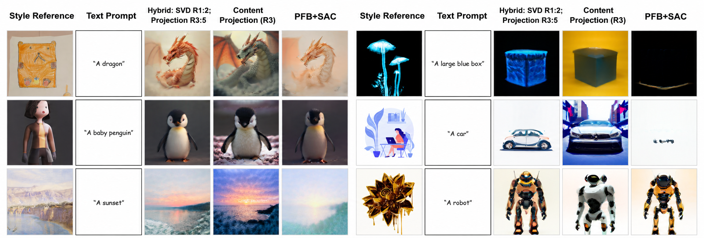

Build a clean content basis
Run the unmodified generation stream and extract dominant channel directions from its intermediate features.
SOICT 2026 · Training-free generation
A content-aware projection that transfers reference appearance while protecting the subject, geometry, and composition requested by the prompt.
Overview
Reference-based style personalization should reproduce the appearance of a style reference while preserving the subject specified by a content prompt. In visual autoregressive models, dominant reference features can also carry object and spatial information, causing content leakage.
CoPFB estimates a low-rank content basis from a clean generation branch and removes the component of the Principal Feature Blending residual that lies in this basis. A hybrid multi-scale schedule then applies conservative early edits and weaker content-filtered refinement at later scales.


Proposed method

Run the unmodified generation stream and extract dominant channel directions from its intermediate features.
Compare style-reference and generation features through the same principal-feature reconstruction.
Project the residual away from the content basis so reference-specific structure is less likely to leak.
Use unprojected rank-one edits early, projected refinement at the next scales, and no injection afterward.
Results
CoPFB reaches 0.297 text similarity, improving over PFB+SAC at 0.293.
The hybrid schedule achieves the strongest harmonic content-style score: 0.393.
Fewer intervention scales reduce time from approximately 3.8 to 2.0 seconds per image.

All methods are training-free and use identical prompts, references, seeds, and sampling settings.
| Method | Text ↑ | Image ↑ | Harmonic ↑ | Time ↓ |
|---|---|---|---|---|
| PFB+SAC | 0.293 | 0.590 | 0.391 | 3.8 ± 0.6s |
| Content Projection (R3) | 0.295 | 0.561 | 0.387 | 1.9 ± 0.3s |
| CoPFB Hybrid | 0.297 | 0.577 | 0.393 | 2.0 ± 0.2s |
Ablation study

Rank 1 gives the best harmonic score; larger protected subspaces remove more style-relevant directions.
Projection improves prompt fidelity, while SAC provides structural guidance during later refinement.
Same-style references with different objects produce different dominant components, confirming the need for content filtering.


Citation
@inproceedings{bui2026copfb,
title = {Content-Preserving Principal Feature Blending for Training-Free Style Personalization},
author = {Le-Hoang Bui and Hoang-Nguyen Cao and Trung-Nghia Le and Minh-Triet Tran and Dinh-Khoi Vo},
booktitle = {Proceedings of SOICT 2026},
year = {2026}
}